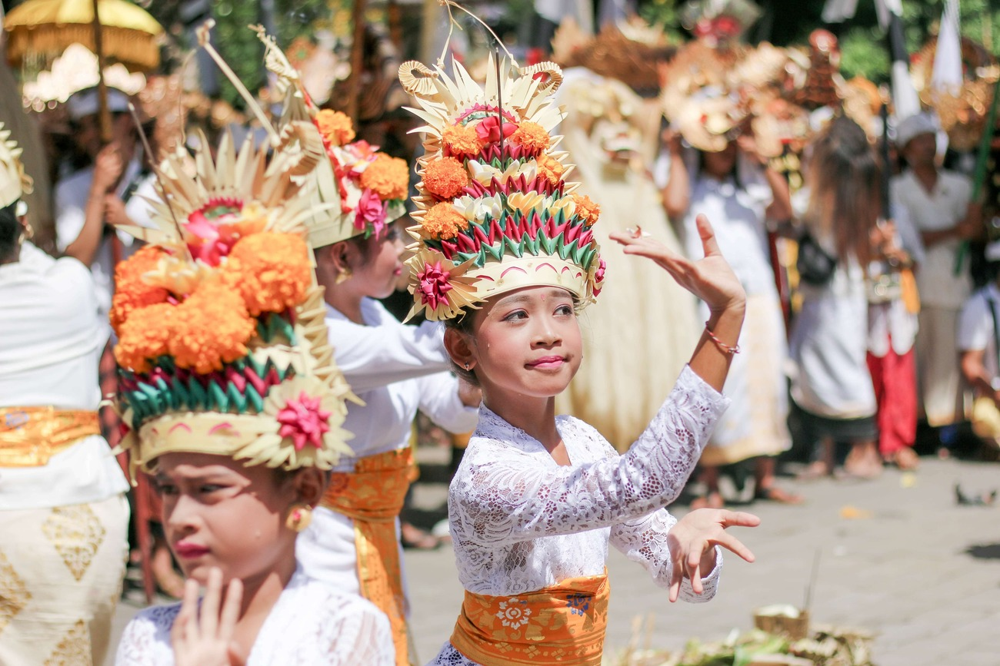
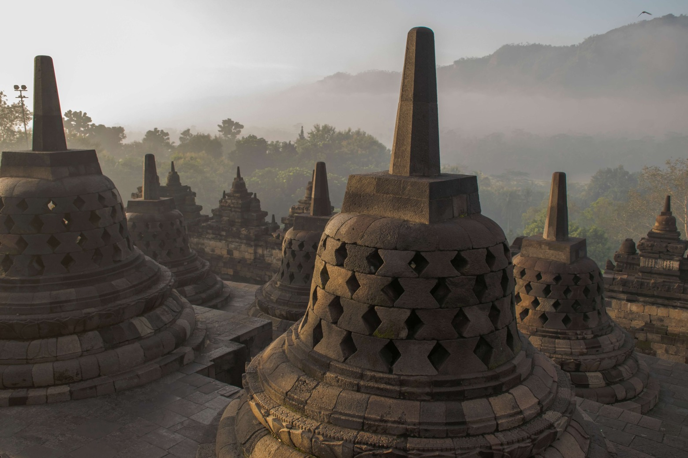
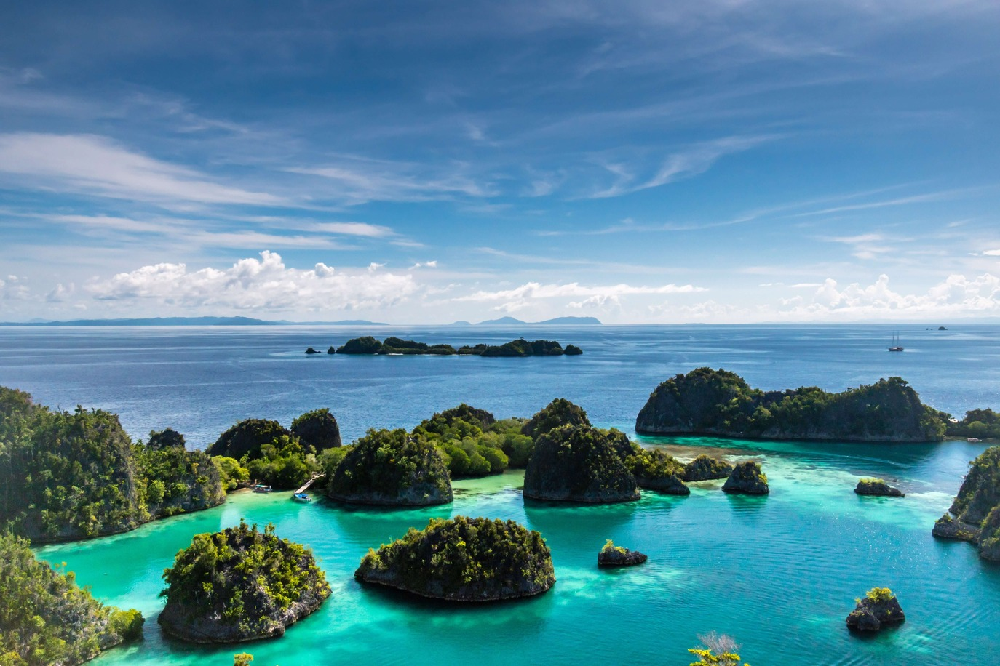

Introduction
Embark on a journey through the diverse and enchanting tapestry of Indonesia—a nation where landscapes are painted with ancient traditions, where nature's grandeur resonates with cultural riches, and where each destination reveals a unique facet of this captivating archipelago. From the mystique of Borobudur's stone-carved narratives to the tranquil rice terraces of Ubud, from the harmonious contrasts of Jakarta's urban symphony to the prehistoric allure of Komodo's dragons, and from the paradisiacal vistas of Raja Ampat to the spiritual sanctuaries of Bali—the following snapshots offer a glimpse into the multifaceted beauty that defines Indonesia's character. Join us as we explore these captivating fragments that together form the mosaic of Indonesia's wonders.
Unveiling Jakarta's Vibrant Contrasts
Nestled within the heart of Indonesia, Jakarta emerges as a city where diverse facets coalesce, giving rise to a tapestry of captivating contradictions. This bustling metropolis effortlessly intertwines tradition and modernity, old-world charm and contemporary dynamism.
In the labyrinthine streets of Kota Tua, the historic heart of Jakarta, colonial architecture stands in juxtaposition with vibrant street markets, revealing a blend of eras that narrate the city's story. Amidst the clamor of progress, age-old temples and mosques offer a tranquil sanctuary, echoing the harmonious coexistence of religions that define Jakarta's character.
Jakarta, West Java
Culinary adventures lead from the sizzle of street-side stalls to upscale restaurants, presenting a fusion of flavors that mirrors the city's multicultural soul. As twilight descends, the cityscape transforms, with neon-lit skyscrapers casting a futuristic glow against the backdrop of time-honored structures.
Beyond the urban bustle, Jakarta's green lungs—parks and gardens—offer refuge from the city's vigor, where nature and modernity find solace side by side. This city, in all its vibrant contrasts, showcases how a harmonious blend of the old and new can create an enchanting experience that embodies Indonesia's rich heritage and its aspirations for the future.
Bali: The Island of Gods
Nestled in the cerulean embrace of the Indonesian archipelago lies Bali, a place where earthly and divine energies converge. Known as the "Island of Gods," Bali exudes a mystical aura that transcends its breathtaking landscapes.
From the verdant terraced rice fields of Ubud to the serene shores of Nusa Dua, Bali is a canvas painted with nature's brilliance. Volcanic peaks stand as sentinels, while lush jungles hold secrets waiting to be discovered. Yet, beyond its physical beauty, Bali's spiritual essence is palpable.
Temples, or "pura," are scattered across the island, each a testament to Bali's deep devotion. Tanah Lot perches on a rocky outcrop, framed by crashing waves—a symbol of spiritual resilience. Uluwatu, perched atop cliffs, hosts ancient Kecak dances, where fire and rhythm tell stories of gods and demons.
Bali, Island of Gods

Bali's allure is also found in its vibrant culture. Intricate dances and ceremonies are a tapestry of art and faith, woven into the fabric of daily life. The island's creativity is expressed in its handicrafts, from intricate wood carvings to mesmerizing batik patterns.
Echoing through the air are the sounds of gamelan orchestras and the aromas of offerings wafting from humble homes and opulent resorts alike. Culinary journeys offer a fusion of flavors, with spicy sambals and aromatic spices, embodying the island's essence.
Bali beckons travelers to immerse themselves in its divine beauty, to tread lightly upon its sacred land, and to feel the ethereal dance between the seen and the unseen. As the sun dips below the horizon and the stars emerge, Bali's title, "The Island of Gods," is a testament to its ability to touch hearts and souls with an undeniable magic.
The Mystique of Borobudur
Amidst the lush landscapes of central Java, Indonesia, the ancient monument of Borobudur stands as a timeless marvel that whispers tales of a bygone era. This colossal Buddhist temple, shrouded in an air of mystique, unravels its secrets as visitors explore its intricate labyrinth of stone.
Borobudur's architecture is a symphony of tiers and stupas, an embodiment of Mahayana Buddhist cosmology. As the sun casts its warm embrace, the intricate relief panels come alive, narrating stories of enlightenment and existence. Each stone-carved tableau captures moments from the past, evoking a sense of wonder and contemplation.
As one ascends the temple's tiers, a journey of self-discovery unfolds. The pilgrimage to the pinnacle mirrors the path to enlightenment, where the material world is left behind step by step. The panoramic view from the top offers a spiritual connection to the surrounding landscapes, where distant mountains and rice fields meld with the present moment.
Borobudur Temple, Central Java

The hushed tranquility of Borobudur seems to invite reflection, prompting visitors to contemplate life's mysteries and the intricate interplay of human endeavors and spiritual pursuits. Sunrise and sunset transform the monument into an ethereal realm, where shadows and light dance upon its ancient stones, imbuing the atmosphere with an otherworldly aura.
Borobudur's mystique is not merely a matter of age but an embodiment of the cultural and spiritual tapestry of Indonesia. Its allure lies in its timeless beauty, its intricate symbolism, and the way it transports those who visit into a realm where history, spirituality, and natural splendor coalesce.
Ubud's Rice Terraces and Cultural Riches
In the heart of Bali, Ubud emerges as a sanctuary where nature and culture converge in perfect harmony. The town's iconic rice terraces, sculpted like staircases to the heavens, serve as a testament to the island's agrarian heritage and artistic soul.
Amidst the emerald landscape of Ubud, rice terraces cascade like natural amphitheaters, a living canvas painted by generations of Balinese farmers. These terraces are not only a marvel of agricultural engineering but also a reflection of the island's deep reverence for the land and its bounties.
Wandering through these terraced valleys, visitors encounter more than just breathtaking scenery. The pulse of Ubud's cultural riches beats in its vibrant arts scene. Galleries showcase traditional and contemporary Balinese art, while workshops offer glimpses into the meticulous craft of woodcarving, painting, and silversmithing.
Rice Fields, Ubud

Ubud's spiritual essence is palpable in its temples and shrines. The Sacred Monkey Forest Sanctuary, with its ancient temples embraced by lush foliage, provides a connection to Bali's mystical side. Pura Taman Saraswati, adorned with lotus ponds and intricate carvings, stands as a homage to the Hindu goddess of knowledge, arts, and wisdom.
Cultural events and performances are a daily occurrence in Ubud. Traditional dances like the Legong and Barong Keris come alive with graceful movements and vibrant costumes, revealing the island's storytelling traditions. Ubud's rich calendar includes festivals that celebrate art, spirituality, and the island's unique blend of Hinduism and animism.
Ubud's rice terraces are more than picturesque landscapes; they're an emblem of Bali's symbiotic relationship with nature, its devotion to culture, and its aspiration to offer visitors a glimpse into its soul. As the sun sets behind the swaying stalks of rice, Ubud unveils itself as a haven where tradition thrives, art flourishes, and the heartbeat of the island resonates in every corner.
Komodo National Park: A Jurassic Journey
Off the shores of Indonesia, a realm seemingly plucked from the pages of prehistory awaits: Komodo National Park. This remote paradise is home to the legendary Komodo dragon, a living relic that evokes images of ancient times.
As visitors step onto the shores of the park's islands, they are transported to a world reminiscent of Jurassic landscapes. Lush jungles give way to dramatic coastlines, while the crystal-clear waters that surround the islands teem with vibrant marine life.
The stars of this living time capsule are the Komodo dragons—majestic, formidable, and the world's largest lizards. With a lineage dating back millions of years, these creatures embody the intrigue of an era long past. Witnessing their lumbering movements and primal power is like encountering a living dinosaur, a testament to the resilience of Earth's ancient inhabitants.
Padar Island, Komodo National Park

Beyond the dragons, Komodo National Park reveals a treasure trove of biodiversity. Beneath the waves, coral reefs burst with color, providing a habitat for an astounding array of marine species. Snorkeling or diving in these waters is akin to exploring an underwater Eden, where manta rays glide and vibrant fish dart through an intricate tapestry of coral formations.
Hiking trails through the park lead to panoramic viewpoints, offering vistas that merge sea and sky, where time feels suspended. The islands exude an air of mystery, conjuring images of explorers venturing into uncharted territories.
Komodo National Park is not just a destination; it's a journey through time. It beckons adventurers to tread lightly upon its rugged landscapes, to witness the majesty of its ancient inhabitants, and to immerse themselves in a world where nature's primeval beauty and the allure of a distant era are palpable at every turn.
Glimpses of Paradise in Raja Ampat
Tucked away in the remote reaches of Indonesia lies a realm so exquisite, it seems to belong to dreams: Raja Ampat. This archipelago, scattered like emerald gems across cerulean waters, is a sanctuary of unparalleled natural beauty.
The very name "Raja Ampat" translates to "Four Kings," a reference to the four main islands that stand guard over this pristine paradise. These islands are just the beginning of an archipelagic wonderland that boasts over 1,500 islands, each one an invitation to explore nature at its most awe-inspiring.
Above the waves, Raja Ampat's scenery unfolds with surreal splendor. Limestone karsts rise dramatically from the sea, adorned with vibrant foliage that paints the landscape in shades of green. Hidden coves, white sand beaches, and turquoise lagoons create a picture of pure serenity.
Beneath the water's surface, Raja Ampat unveils a kaleidoscope of marine life. The coral reefs here are legendary, boasting a biodiversity that rivals any other on Earth. The underwater gardens burst with colors as countless species of fish, coral, and other creatures go about their vibrant lives.
Raja Ampat Regency, Southwest Papua province

Snorkeling and diving here is like gliding through a living fantasy. Schools of fish move in synchronized harmony, while graceful manta rays and elusive pygmy seahorses make their appearances. Coral formations take on shapes that defy imagination, creating an underwater realm that feels almost surreal.
But beyond its breathtaking landscapes, Raja Ampat offers a glimpse into the lives of indigenous communities that have called these islands home for generations. Their connection to the land and sea is evident in their traditions and lifestyles, reminding visitors of the delicate balance between nature and culture.
Raja Ampat is more than a destination; it's an invitation to witness the raw beauty of our planet in a setting that seems untouched by time. It's a place where the boundaries between reality and paradise blur, leaving visitors with memories of a world where nature's grandeur reigns supreme.
Conclusion
In the intricate mosaic of Indonesia's wonders, each destination we've explored shines with its own distinct brilliance. From the mystical allure of Bali's temples and rice terraces to the ancient echoes of Borobudur's stone carvings, from the harmonious contrasts of Jakarta's urban tapestry to the prehistoric charm of Komodo's dragons, and from the cultural riches of Ubud to the paradisiacal vistas of Raja Ampat—each place offers a unique chapter in the narrative of this diverse and captivating nation.
Indonesia is a living testament to the richness of human history, the beauty of nature's creations, and the harmony that can emerge when cultures and landscapes intertwine. These snapshots we've explored serve as mere glimpses into the myriad wonders that await those who venture to this archipelagic gem. The allure of Indonesia lies not only in its breathtaking landscapes, but also in the stories etched into its stones, the rhythms of its dances, the flavors of its cuisines, and the warmth of its people.
As we conclude this journey through words, let these fragments of Indonesia's beauty inspire you to embark on your own exploration of this remarkable nation—one that promises to unfold with even more layers of wonder and discovery, inviting you to be a part of its ongoing story.